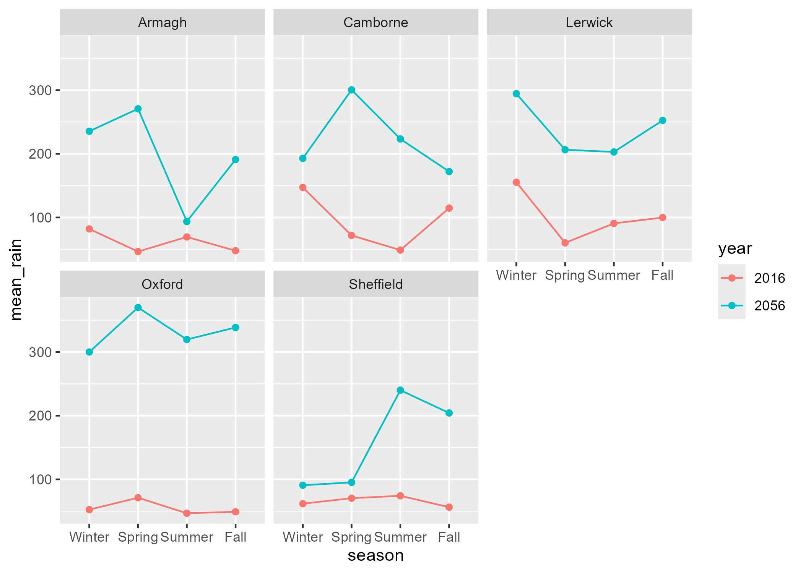
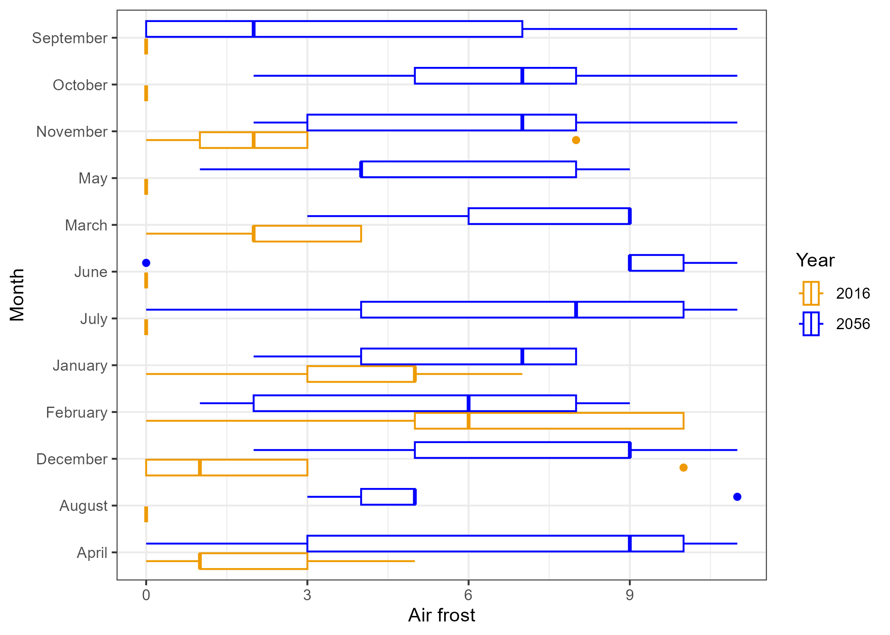
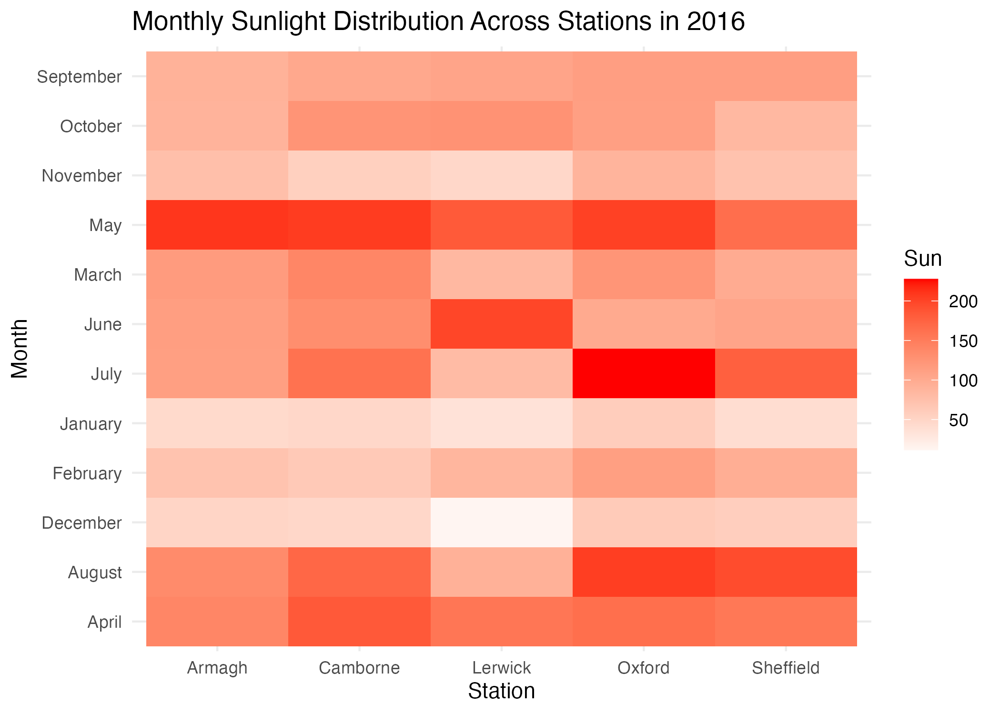

geom_errorbar(aes(ymin = sun_avg - sun_sd,
ymax = sun_avg + sun_sd), width = 0.2)Exercise 3: ggplot2
Getting started
Before you proceed with the exercises in this document, make sure to run the command library(tidyverse) in order to load the core tidyverse packages (including ggplot2).
The data set used in these exercises, climate.xlsx1, was compiled from data downloaded in 2017 from the website of the UK’s national weather service, the Met Office.
The spreadsheet contains data from five UK weather stations in 2016. The following variables are included in the data set:
| Variable name | Explanation |
|---|---|
| station | Location of weather station |
| year | Year |
| month | Month |
| af | Days of air frost |
| rain | Rainfall in mm |
| sun | Sunshine duration in hours |
| device | Brand of sunshine recorder / sensor |
The data set is the same as the one used for the Tidyverse exercise. If you have already imported the data, there is no need to import it again, unless you have made changes to the data assigned to climate since the original data set was imported.
Need a little help? Consult the ggplot2 cheatsheet here: https://rstudio.github.io/cheatsheets/data-visualization.pdf
Scatter plot I
Make a scatter (point) plot of rain against sun.
Color the points in the scatter plot according to weather station. Save the plot in an object.
Add the segment
+ facet_wrap(vars(station))to the saved plot object from above, and update the plot. What happens?Is it necessary to have a legend in the faceted plot? How can you remove this legend?
Hint
try adding a theme() with legend.position = "none" inside it.
Graphic files
Use
ggsave(file="weather.jpeg")to re-make the last ggplot as a jpeg-file and save it. The file will be saved on your working directory. Locate this file on your computer and open it.Use
ggsave(file="weather.png", width=10, height=8, units="cm")to re-make the last ggplot as a png-file and save it. What do the three other options do? Look at the help page?ggsaveto get an overview of the possible options.
Scatter plot II: error bars
Calculate the average and standard deviation for sunshine in each month and save it to a table called
summary_stats. You will needgroup_byandsummarize. Recall how to do this from the tidyverse exercise.Make a scatter plot of the summary_stats with month on the x-axis, and the average number of sunshine hours on the y-axis.
Report here the average number of sunshine hours in May.
Add error bars to the plot, which represent the average number of sunshine hours plus/minus the standard deviation of the observations. The relevant geom is called
geom_errorbar.
Hint
Line plot (also known as a spaghetti plot)
Make a line plot (find the correct
geom_for this) of the rainfall observations over time (month), such that observations from the same station are connected in one line. Put month on the x-axis. Color the lines according to weather station as well.The month variable was read into R as a numerical variable. Convert this variable to a factor and make the line plot from 11 again. What has changed?
Hint
If variable is a factor the geom_line function needs the group aesthetic to stratify categories.
aes(group = station)- Use
theme(legend.position = ???)to move the color legend to the top of the plot.
Layering
We can add several geoms to the same plot to show several things at once.
Add
geom_point()to the line plot from above.Now, add
geom_hline(yintercept = mean(climate$rain), linetype = "dashed")at the end of your code for the line plot, and update the plot again. Have a look at the code again and understand what it does and how. What do you think ‘h’ in hline stands for?Finally, try adding the following code and update the plot. What changed? Replace
X,Y,COL, andTITLEwith some more suitable (informative) text.
labs(x = "X", y = "Y", color = "COL", title = "TITLE")Box plot I
Make a box plot of sunshine per weather station.
Color the boxes according to weather station.
Box plot II - Aesthetics
There are many ways in which you can manipulate the look of your plot. For this we will use the boxplot you made in the exercise above.
Add a different legend title with
labs(fill = "Custom Title").Change the theme of the ggplot grid. Suggestions:
theme_minimal(),theme_bw(),theme_dark(),theme_void().Instead of automatically chosen colors, pick your own colors for
fill = stationby adding thescale_fill_manual()command. You will need five colors, one for each station. What happens if you choose too few colors?Change the boxplot to a violin plot. Add the sunshine observations as scatter points to the plot. Include a boxplot inside the violin plot with
geom_boxplot(width=.1).
Histogram
Make a histogram of rain from the climate dataset (find the correct
geom_for this). Interpret the plot, what does it show?R suggests that you choose a different number of bins/bin width for the histogram. Use
binwidth =inside the histogram geom to experiment with different values of bin width. Look at how the histogram changes.Report here the number of bins you would recommend.
Color the entire histogram. Here we are not coloring/filling according to any attribute, just the entire thing so the argument needs to be outside
aes().
Bar chart I
Make a bar chart (
geom_col()) which visualizes the sunshine hours per month. If you have not done so in question 12, convert month to a factor now and remake the plot.Color, i.e. divide the bars according to weather station.
For better comparison, place the bars for each station next to each other instead of stacking them.
Make the axis labels, legend title, and title of the plot more informative by customizing them like you did for the line plot above.
Bar chart II: Sorting bars
Make a new bar chart showing the (total) annual rainfall recorded at each weather station. You will need to calculate this first. The format we need is a dataframe with summed up rain data per station.
Sort the stations in accordance to rainfall, either ascending or descending. This was shown in the ggplot lecture. Sort your rain dataframe from the question above by sum, then re-arrange the factor-levels of the ‘station’ as shown in the lecture.
Add labels to each bar that state the sum of the rainfall per station. You can do this by adding
geom_label()to the plot and providing the information under thelabelkeyword inside theaes().Report here the total rainfall recorded at the Armagh station.
Adjust the label positions so that the labels are positioned above the bars instead of inside them.
Hint
Look up geom_label function and pay attention to the position variable.
Wrapping up
- Like in the last exercise; imagine you need to send your code to a collaborator. Review your code to ensure it is clear and well-structured, so your collaborator can easily understand and follow your work. Render your Quarto document and look at the result. Try to change the size of a figure by modifying the chunk header.
Optional section
Load in the climate change dataset you exported in the last optional exercises.
Use
group_by,summarize, andfacet_wrapto recreate this plot. Consider if you need to change the class of some of the variables prior to plotting.
Your supervisor does not like colors. Change the stratification to be based on
linetypeinstead ofcolor. Add a white background, update the labels to start with uppercase letters, and provide the plot with a meaningful title.Recreate this plot. Use whatever colors you like (but change them from the default coloring) and give the plot at meaningful title.

Recreate this plot using
geom_tile()to make a heatmap, andscale_fill_gradient2()to select custom colors.
Make the same plot as above for year 2056. Compare the two plots. How will the sunlight change across stations and months?
Footnotes
Contains public sector information licensed under the Open Government Licence v3.0.↩︎